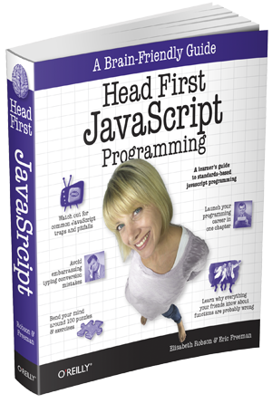

```javascript
try {
whatDoYouKnow();
}```
How many of you know a high schooler who is interested in coding?How many of you had access to a PC in your home in high school?How many of you did an internship with a tech company?How many of you had family members or close friends who got you interested in technology?Who has taught before? (Anything, incl. computer science)Who knew they wanted to be in the technology field when they were in high school?
Who knows what the following code is doing?
What Is This Project?
D-Code is an after-school program in which students
learn the fundamentals of coding & software development.
The program is held at Detroit Edison Public School Academy (DEPSA)
Early College of Excellence, a charter high school just north of
Eastern Market.
We meet twice a week, for two hours each after school.
Goals
Why Did We Decide to Do This?
We were already interested in community outreach.
We saw a need.
We were familiar with teaching.
Goals
What Resources Did We Use?
For learning HTML/CSS/JavaScript:

For presenting HTML/CSS/JavaScript:
For teaching the course
Mr. Lincoln, engineering teacher extraordinaire
Goals
What Has Been Easy? Difficult? Fun?
Remembering the resource gap and checking our privilege--difficult.
Forming relationships with the students--easy...
Keeping the lessons engaging, and trying to teach to multiple
learning styles--difficult.
The challenge of keeping up with the students' growth and development
--fun.
Scheduling--difficult.
Watching the students light up when their code works--fun.
Goals
What Are Some Things We Didn't Think About?
(Ironically enough...)
Goals
What Lessons Did We Learn?
Re: Organization
Get the academic calendar with all academic/extracurricular days
A stronger system for keeping track of your own files
Creating more integrated lessons that incorporated more soft skills
from the beginning.
Re: Engagement
Create more out of class lessons to be delivered via email/text
messaging
Use of more hands-on student-led activities
Re: Efficiency
Have students take an entry survey
Develop on codepen.io (or something similar) from the beginning